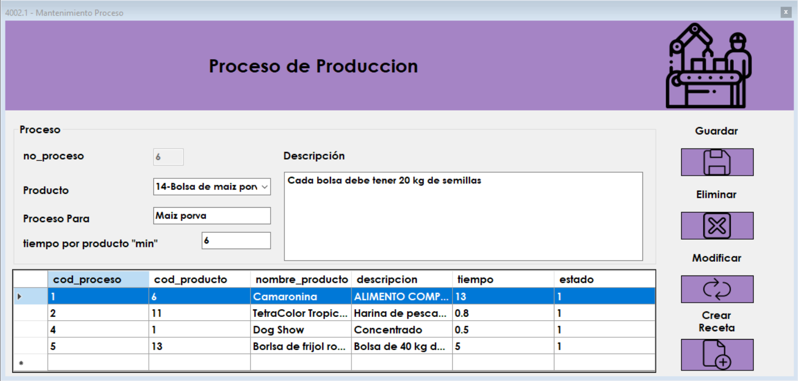

Pantalla De Inicio
Un producto para la venta necesita un proceso de realizacion y una receta, para esto se crearon ambos formularios que veremos a continuacion
Ingreso de nuevo proceso
Necesitamos elegir el producto al que relacionaremos un proceso, luego el titulo que le daremos a ese proceos "para DogShow" por ejemplo. posteriormente debemos ingresar el tiempo que se necesita para elaborar 1 solo producto en minutos, una descripcion del proceso de fabricacion y una vez creado podemos crear una receta.


Modificar Proceso
Debe dar doble clic sobre el proceso que deseemos modificar, en este solo se podrá modificar la descripcion y el tiempo por producto
Eliminar Proceso
Debe dar doble clic sobre el proceso que desea eliminar, luego le preguntará si desea eliminar ese proceso, si esta seguro de clic en "si", si no puede evvitar eliminarlo dandole clic en "no".
Crear Receta
Para crear o modificar una receta, debe dar doble clic sobre el proceso al cual le añadirá una receta.
Preparar Receta
Añada todos los productos que desee segun lleve la respectiva receta, debe agregar la materia prima, la unidad de medida, la cantidad necesaria, la cantidad fija y rendimiento. unicamente podra agregar 1 sola vez una materia prima.
Cantidad fija: Cantidad estandar que es directamente proporcional al rendimiento
Rendimiento: El rendimiento supone cuanta cantidad de productos le permite crear la cantidad fija
por ejemplo: 100 unidades me permiten crear 5 productos

Modificar Receta
puede modificar algun elemento de la receta, en este caso solamente podra modificar la cantidad necesaria, la cantidad fija, el rendimiento del producto y la unidad de medida.
Eliminar de Receta
Seleccionando la materia prima podrá eliminarla dando clic en el boton "eliminar" y confirmando si esta seguro de querer hacerlo
Errores
Puede Tener Los Siguientes Errores.